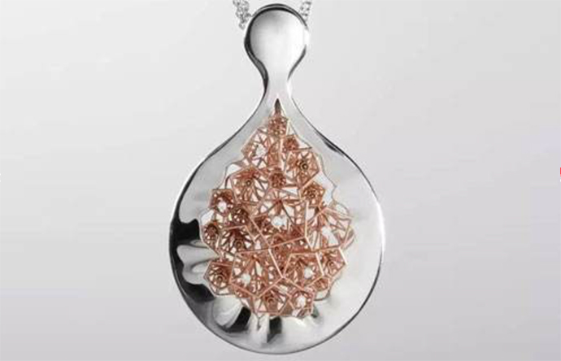

中国大陆地区传统工艺珠宝的制作流程以及近现代的传承文明
原创
2017-10-16
小骨
“花丝工艺是指用金属细丝经盘曲、掐花、真丝、堆累等手段制作造型的细金工艺，将金或银等金属拉成所需粗细。
金属细丝经盘曲、掐花、真丝、堆累等手段制作造型的细金工艺，属拉成所需粗细的花式来取样”
首先制作时把拉成的丝合股拧起来作师根据图纸的花样用镊子将丝掐成各种花型。

首先制作时把拉成的丝合股拧起来作师根据图纸的花样用镊子将丝掐成各种花型。
原文链接：http://www.xitongcheng.com/win7/notebook_xiazai_4445.html#download